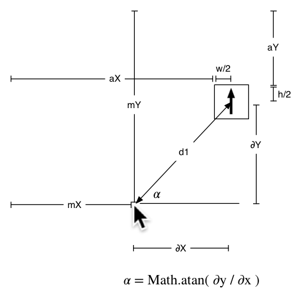

This assignment will focus on using Javascript to perform a bunch of various tasks. You should have a good understanding of how to use Javascript to select various elements, create elements, and modify element attributes.
You May Not Use Javascript Libraries!
You may NOT use any popular (or unpopular for that matter) existing Javascript libraries for this assignment.
No jQuery.
No Dojo.
No Moo Tools.
No YUI.
No script.aculo.us.
No ExtJS.
No Prototype.
No D3.
You get the idea.
Q: "I found this library that you didn't include on that list up there, can I use that?"
A: No
Q: "You mean I really have to just use plain old vanilla Javascript for this assignment?"
A: Yes
Q: "But that's dumb! In the 'real world' don't you pretty much always use some library?"
A: In the 'real world' often 3rd party libraries are used and do make life much easier. The reason that I am restricting their use in this assignment, is that this class is a Computer Science course, and not a Visual Arts course. You will be the people developing new javascript libraries, or working on existing ones in the future. I want you to understand how this all works 'under the hood' so to speak.
For this problem you will create a simple interaction between your mouse cursor and elements on a page. Watch the following video to get a sense of what you'll be doing.
Video of final web page behavior.
This seems like a lot at first, but lets break it down into some smaller pieces. First, you are given an HTML file and CSS file. There's not much in the HTML file other than a <div id="main"> element. This means that you will need to programmatically create the arrows, place them on the page, and attach the desired behavior as an event handler.
You're also given a starting javascript file: problem1.js. In this file are some basic suggested functions, along with some hints as to how to approach this problem.
You will have to dust off some of your Geometry and Trigonometry knowledge from high school, so go look up SOH CAH TOA again :). Most of the math is provided for you, but you'll still need to understand how to obtain some of the required measurements from the DOM.
In order for you to point each arrow at the mouse cursor correctly, you will need to loop over all the arrow elements you create, and calculate the angle between the center of the arrow graphic and the mouse pointer. Then you need to apply that angle as a transformation on the arrow. This calculation has to take place separately for each arrow, since each one is in a different place.

Angle Calculation Measurements - Click for larger view
Here are a few more rules for this assignment, as well as considerations:
There shall be 50 arrows, randomly placed around the page
The arrow images should be 40 pixels square (width and height)
Each arrow should point directly at the head of the mouse pointer
Clicking on an arrow should delete that arrow
Clicking anywhere else on the page should create a new arrow, randomly placed
Homework Submission
You should create a folder holding your files, and zip it up for submission. Name your folder and zip file something descriptive like Your-Name-HW4.zip or something. Please make a folder with your files in it, and zip up the folder. Do not select all the files and zip them up.
File List
problem1.js
Homeworks Zip files will be submitted to D2L, in the "Assignment 4" dropbox.
{kind=link}